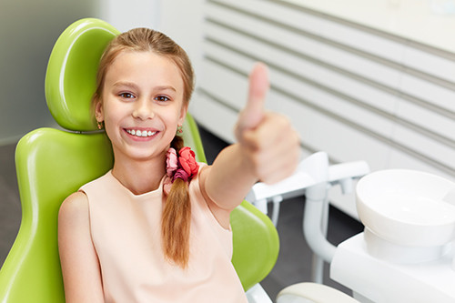

Особливу увагу ми приділяємо діткам. Прагнемо створити нове, позитивне сприйняття прийому у лікаря-стоматолога, яке ґрунтується
на довірі та бажанні бути здоровим. Доброзичливе і дружнє ставлення, пояснення і відповіді на дитячі питання — це основа психологічної підготовки до стоматологічних процедур. А найголовніше — м’яке і безпечне знеболення, котре допоможе малюку зберегти спокій та гарний настрій після відвідин лікаря.

Що допомагає нам успішно лікувати дітей?
- Гра — це найкращий спосіб забавити малюка, створити для нього приємну атмосферу і отримати натомість його довіру.;
- Спеціальні костюми — лікарняний одяг, прикрашений зображенням улюблених мультиплікаційних героїв.
Це заспокоює дитину, схиляє до сприйняття медика радше як аніматора зі свята, аніж як суворого лікаря у білому халаті.;
- Перегляд мультиків — це дозволяє змістити увагу маленького пацієнта з маніпуляцій лікаря у його ротовій порожнині на
улюблені анімаційні історії.
В кабінетах встановлені екрани для демонстрації мультфільмів під час лікувальних процедур.;
- Зручний саме для дитини прилад подачі «звеселяючого газу», щоб лікування було комфортним та безболісним.
Ми перші в Тернополі почали використовувати його у дитячій стоматології, отримавши чимало позитивних відгуків
від вдячних клієнтів, які побоювалися, що їхніх малюків буде неможливо пролікувати у стоматолога без загальної анестезії.